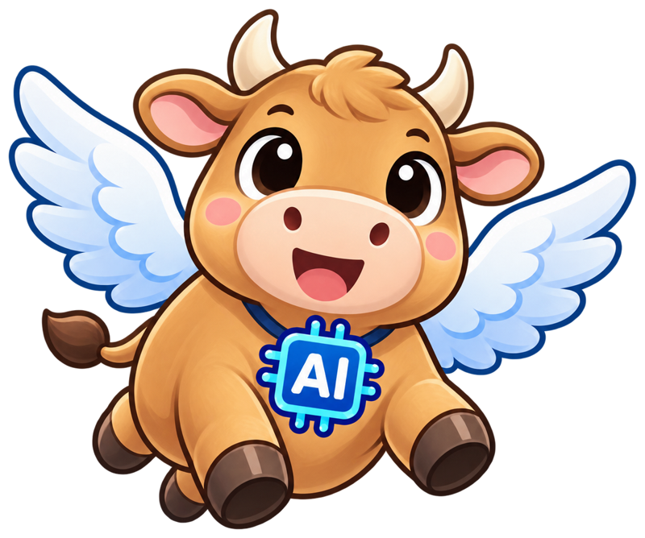

하늘소 AI 소식
10월 첫째 주
AI 소식
9.27
10.3
한 주 동안 나온 소식 가운데 여섯 가지

hanulso.github.io/posts/ai-news-2026-10-03
01 / 07
코딩 도구
닷새 동안
하루도 빠짐없이
코딩 도구 소식이 나왔다
9.29
OPENAI DEVDAY
GPT-6.1 Sol
OPENAI
늘 켜져 있는 에이전트 dots
9.30
GOOGLE
Gemini 4 Argon 발표
GITHUB COPILOT
HydraFusion
10.1
ANTHROPIC
Claude Code Mods
GITHUB COPILOT
컴퓨터 사용
10.2
GITHUB COPILOT
Opus 4.7 등 지원 종료
10.3
CLAUDE CODE
v2.1.288 지운 프롬프트 되살리기
해외 발표는 현지 날짜 기준 · 출처: OpenAI · Google · GitHub · Anthropic 발표
02 / 07
ANTHROPIC · 10월 1일(미국)
몇 줄짜리 TypeScript로
Claude Code를 바꾼다
TypeScript
몇 줄짜리 mod
Claude Code
동작과 화면이 바뀐다
CLI · 데스크톱 앱
플러그인
담아서 나눈다
샌드박스 없음
mod는 Claude Code와
같은 권한
으로 내 컴퓨터에서 돈다. 믿을 수 있는 곳의 mod만 깔자.
출처: Claude 블로그 「Customize Claude Code with mods in TypeScript」
03 / 07
새 모델 · 100만 토큰당 가격
새 모델 둘, 출발 가격은 똑같이
$2 / $10
GPT-6.1 Sol
OpenAI · 9월 29일
$2
$10
Gemini 4 Argon
도입가
$2
$10
Gemini 4 Argon
도입 기간 뒤
$4
$20
입력
출력
점선: 도입 기간 뒤
Sol
은 Codex·ChatGPT Work·GitHub Copilot에서 바로 쓴다
Argon
은 아직 일반 사용자에게 안 풀렸다
Sol 가격은 입력 272K 토큰 이하 기준 · 출처: OpenAI 변경 이력, Google 블로그
04 / 07
ANTHROPIC · 10월 2일(미국)
1억 달러로
엔지니어 1만 명
을 키운다
1
억 달러
Claude Frontier Academy에
들이는 돈
1
만 명
2027년 말까지 키울
Frontier Deployed Engineer
12
주
자기 회사에서 실제 프로젝트를 이끄는 레지던시
1단계
대면 교육 · 실기 시험
›
2단계
Claude Resident Engineer 배지
›
3단계
12주 레지던시
출처: Anthropic 「Claude Frontier Academy」
05 / 07
과기정통부 · 9월 29일
SW중심대학이
AI중심대학
으로 바뀐다
18
+
15
AI중심대학 18곳 · AX대학원 15곳 출범
SW중심대학에서 전환 15곳
신규 3곳
대학마다
해마다 30억 원
, 최장 8년
전교생
AI 기초교육
이 의무가 된다
내년에 남은 SW중심대학
38곳
도 평가해 전면 전환
출처: 대한민국 정책브리핑 「AI중심대학 18곳·AX대학원 15곳 출범」
06 / 07
써 볼 만한 것 · 클로드 코덱스 스킬 가이드북
스킬은 만드는 것보다
고르는 게
어렵다
110일 동안 한 번이라도 쓴 스킬
안 쓴 스킬
27
/
82
저자가 만든 스킬 82개 중 실제로 쓴 것
책에는 8개 분야, 스킬
56개
만 골라 담았다
위키독스에
무료
공개
출처: 긱뉴스 「클로드 코덱스 스킬 가이드북」 (10월 1일)
07 / 07
발표자 노트
← → 이동 · F 전체 화면 · N 노트 패널 · P 발표자 창 · H 도움말